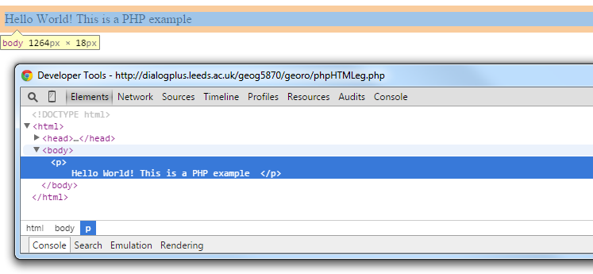
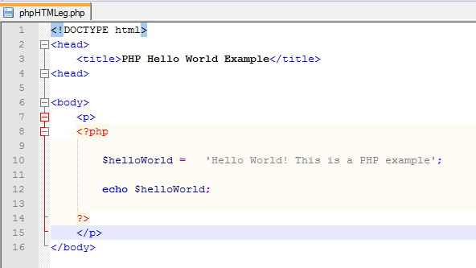

PHP is a server side scripting language which was originally developed for web development but is also a general purpose programing language. PHP stands for PHP: Hypertext Preprocessor; a recursive acronym (!), but was originally known as Personal Home Page/ Forms Interpreter (PHP/ FI). PHP is cross-platform and supported by all major web-servers.
PHP development began in 1994 when Rasmus Lerdorf wrote a number of Common Gateway Interface (CGI) binaries to maintain his personal homepage. These slowly turned from being independent tools to being function calls in a scripting language. Rasmus admits that he never intended to write a programming language; “…I have no idea how to write a programming language, I just kept adding the next logical step…” (Rasmus Lerdorf, 2003). The source code was originally released on the Usenet community discussion forum as a way to locate bugs and improve the code. A development community soon began to form and a Beta version of PHP/ FI2 was launched in 1997. As a result of its organic growth, PHP is often faulted for having inconsistent naming functions and parameter ordering, however due to its simple syntax, ability to embed HTML and handle forms, it has become extremely popular. In January 2013, 240 million websites used PHP for server-side functionality
As PHP is executed on the server it can be used for a number of functions such as; evaluating form data sent from the client; sending and receiving cookies (to remember user data on the web), connecting to / querying databases with SQL, open / read /delete files on the server. Although PHP commonly returns plain HTML, it can also output images, PDF files and videos.
PHP code should be encased in the script tags <?PHP and ?> and saved with the file extension ‘.php’. You can access the PHP script directly from the browser and the browser will render output from the PHP file as plain text and display it, or the .php file can be a mix of PHP scripts and HTML if you wish to create a structured page. Often .php files are just HTML pages with PHP wired in (the PHP interpreter will send out the HTML in the .php file with the PHP language elements converted to HTML as well):
 To declare a variable in PHP use the dollar sign (note the semi-colon line breaks):
$person = ‘John Smith;
And to print results use ‘echo’:
echo $person;
Comments can be added using the double forward slash syntax for a single line comment or a forward slash and asterisks for multi-line comments.
//This is a single line comment
/* This is a
multi-line
comment
*/
To concatenate two strings use the ‘.’ Operator:
$string1 = "Hello";
$string2 = "World";
echo $string1.' '.$string2.'!';
A well as being embedded outputs in HTML, PHP can also be interfaced with Javascript to provide additional functionality. PHP is a weakly typed language, so there is no need to declare data types, however it is notoriously difficult to de-bug, so it is suggested you take extra care when coding and don’t forget to include semi-colon line breaks. As PHP is a server-side scripting language the PHP files must be sat on a server to run. They will not work locally in your browser.
Take a quick look at the Code Academy resources on the PHP language to familiarise yourself with the syntax, but there is no need to learn the language in any great detail for the purposes of this course.
Let’s look at how we’d make a PHP-based webpage that embeds some data from our Postgres database. Here we’ll talk about getting the data into the webpage as raw JSON format text. In later sessions we’ll see how to then map this.
Alongside its general scripting capabilities, PHP can create a secure connection to a database in order to retrieve, query, update and delete the data within. To create a connection to a PostgreSQL database the pg_connect() function is used which takes the host name, database name, username and password as arguments and returns a pointer to the database connection. It is a good idea to assign this pointer to a variable so it can be used later; in this case we have assigned the connection pointer to a variable named ‘dbconn’.
$dbconn = pg_connect("host = 'xxx' dbname = 'xxx' user = 'xxx' password = 'xxx'");
Once a connection has been established, the database can be queried using the pg_query() function which returns a resource containing the results of the query and is known as the results set. Notice how this function accepts two arguments; the database connection pointer variable defined earlier, ‘dbconn’, and an SQL query. Again, it is good practice to assign the result set to a variable so you can process the results set further, in this case we have used ‘result’:
$result = pg_query($dbconn, "SELECT * FROM tweets");
A convenient way to examine the results set is to use the pg_fetch_array() function which returns the results row by row. pg_fetch_array() accepts 3 arguments; the results set returned from pg_query(); the row number to fetch (if set to null or empty the next row is fetched) and the result type (in this case specified as an associative array)
$row = pg_fetch_array($result, NULL, PGSQL_ASSOC);
echo $row;
The above code will only print the first row in the results set and as we want to print each row, we can place this function in a while loop. This will loop through the results set row by row; printing each row of data until the end of the results set is reached.
while ($row = pg_fetch_array($result, null, PGSQL_ASSOC)) {
echo json_encode($row);
}
json_encode is used to encode the data into JSON format which can be read by the browser; otherwise the data would just be returned as ‘Array array’.
The last thing to do is to close the database connection using the pg_close() function. This function accepts the database connection pointer as an argument and closes the connection. Although PHP automatically closes the connection when the script ends, this is considered good practice.
pg_close($dbconn);
In task three we will look in greater detail at creating a connection to the database instance on dialogplus and querying our dataset.